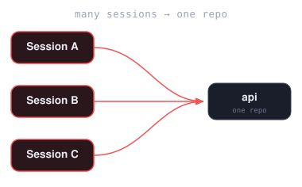
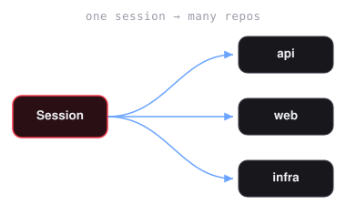
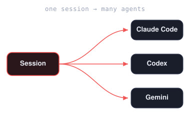

KLAUSSY
The agent-first IDE that reviews
its own code before you commit.
Multi-agent, multi-repo coding sessions in one workspace.
Klaussy Desktop runs multi-agent, multi-repository AI coding sessions in a unified, tabbed workspace. It spawns isolated Git worktrees per task — so you can run multiple agents in parallel without juggling branches, staging mess, or local workspace clutter.
The desktop is the face. The klaussy-agents engine is the spine. While other orchestrators give you a worktree grid, Klaussy brings the conventions, custom skills, and active git-level guardrails that keep agents aligned with your codebase.
Trusted by engineers at
Source-available under SUL 1.0. Free for personal use and development.
100% free for individual developers; paid license required only for commercial production/redistribution.
Need a different platform? All downloads ↓
- macOS · Apple Silicon M1 / M2 / M3 / M4 Macs (2020 and later) .dmg
- macOS · Intel Pre-2020 MacBooks, iMacs, Mac mini .dmg
- Windows · Installer Standard install on Windows 10 / 11 .exe
- Windows · Portable Single-file .exe, no install needed .exe
- Linux · Debian / Ubuntu Ubuntu, Debian, Mint, Pop!_OS .deb
- Linux · AppImage Works on any Linux (Fedora, Arch, openSUSE, …) .AppImage
Not sure if your Mac is Apple Silicon or Intel? Click the Apple menu → About This Mac. If the Chip row says “Apple M1/M2/M3/M4” you have Apple Silicon. If it says “Intel”, pick the Intel build.
Bring your own agent. All of them, if you like.
Klaussy orchestrates the agent you choose — it doesn’t replace it. Pick a global default, switch it per tab, or run several side by side in the same session, each on its own worktree. You need at least one installed and authenticated; Klaussy’s first-run check tells you what’s missing.
- Claude CodeAnthropic · the default
- CodexOpenAI
- GeminiGoogle
- AntigravityGoogle
- CopilotGitHub
- CursorAnysphere
- ClineVS Code extension
- opencodeopen source
- Kimi CodeMoonshot AI
- Ollamavia Aider · local models
- Plain shellno agent, just a terminal
Or run any agent in a sandbox
Pick Nemesis8 Sandbox as the agent for any tab and it runs inside an isolated Nemesis8 Docker container instead of directly on your machine — keeping the agent’s blast radius off your host. Add a gateway under Preferences → Nemesis8 Sandboxes (one click sets one up locally), and point it at a local or remote gateway. Add more than one and each shows up in the agent picker as Nemesis8: <name>, so you can run a sandboxed Claude and a sandboxed Codex side by side.
Sessions, your shape.
Stack several on one repo, fan one across many repos, or run a mix of agents inside a single session.



What it does
Parallel agents, isolated worktrees
One task = one git worktree + one independent agent. Run any mix of the supported agents side by side. The sidebar tracks staged/unstaged counts, status, and branch alignment per task.
Sandboxed agents
Optionally run an agent inside an isolated Nemesis8 Docker sandbox instead of directly on your machine. Add a gateway under Preferences → Nemesis8 Sandboxes, then pick Nemesis8 Sandbox as the agent for any tab. Keeps the agent's blast radius off your host, local gateway or remote.
Multi-repo sessions, your way
A session is whatever you need — one repo or many. Pick the repos it touches (even straight from your recent GitHub repos, cloned on demand); each gets the same branch and its own worktree, with any number of agents you choose, even different ones side by side. Run several sessions at once — including more than one on the same repo — and resume any of them later with one click.
Repo-aware agents
On session start, Klaussy maps your repo — its conventions, rules, and import graph (fan-in/out, cycles, endpoint chains) — and gives your agents that context to draw on. Plan, review, debug, and implement runs ground their work in how your codebase fits together, not generic advice. Refreshes as the repo changes.
Auto-debug CI failures
Klaussy connects to your PR's CI; one click pulls the failing job's logs and your agent returns root cause + suggested fix, applied straight to the worktree.
PR reviews without local checkout
Paste a GitHub pull request URL to view files, commit history, checks, and AI review tabs. Read the diff with inline comments, run an AI review that breaks into per-finding cards — ignore, implement, or append to PR — and materialize any review into a local worktree with one click.
Cross-agent session resuming
Start a session with Claude Code, pause it, and resume it under a different one. Klaussy automatically compiles a structured handoff brief to catch the new agent up.
Broadcast to all agents
Type one prompt and send it to every agent in a session at once — kick off the same task across each worktree without retyping.
Multi-agent MCP manager
Connect Model Context Protocol servers — GitHub, Slack, Linear, Notion, Datadog, and more — from one catalog, with a single add fanning out to every agent you pick.
Plan · Debug · Review
Every worktree has a dropdown that spawns a dedicated agent tab running Klaussy's guided Plan flow, a Debug pass, or a multi-phase PR review — same worktree, no context loss.
Inline AI — locally
Tab-autocomplete powered by qwen2.5-coder via Ollama. ~100ms latency. No code leaves your laptop.
Commit-time review gate
A built-in pre-commit and pre-push hook runs an agent-powered audit over your staged diffs, looking for silent failures, leaked credentials, debug leftovers, correctness bugs, and overly verbose comments. Auto-tidies code before committing, so your branch stays clean and stable before anything is pushed.
Workflow-oriented tools
Fuzzy command palette (Cmd+K), pop-out task windows, and built-in flows for planning, debugging, and humanizing prose.
Built-in editor
Monaco editor with LSP diagnostics. Edit and commit straight from the diff panel. AI-generated commit messages optional.
See it in action
One session, every repo, your pick of agents. Here a single session spans two repos side by side — OpenAI Codex on the left, Claude Code on the right — while Klaussy builds a conventions-aware CLAUDE.md so both agents work from your codebase's real structure.

AI PR review: each finding is its own card with severity, file:line location, the offending code, and a written critique. Per-finding actions: Ignore, Add to PR, Implement, or open a chat to Ask or Investigate — all run on your selected agent.

Debugging a failing CI check: click Debug on the red row and your agent pulls the job logs, pinpoints the cause, and proposes a fix. Ask follow-ups in the chat, then click Fix this to have the agent apply it in the PR worktree.

The same check expanded to its annotations: every failure parsed out with its file:line, the test name, the error message, and stack frames — so you can see exactly what broke before sending the agent in to debug it.

Review the full diff in-app: every changed file with add/remove counts, the unified diff, and inline comment threads you — or your agent — can reply to. The same surface you'd get on GitHub.

Any agent, plus a real editor. Run your agent of choice in the terminal with a built-in Monaco editor and LSP diagnostics right beside it — edit, then commit from the diff panel.

What you need
- macOS 12 (Monterey) or later — Apple Silicon or Intel — Windows 10/11, or Ubuntu 22.04+ (other modern Linux distros generally work).
- Node.js 18+ — the agent CLIs are npm packages.
- At least one agent CLI or IDE extension installed and authenticated — see the supported agents for install links. Klaussy orchestrates the agent you choose, it doesn't replace it, and its first-run check tells you what's missing.
- GitHub CLI (gh) authenticated. Required for PR review features.
- Docker + a Nemesis8 gateway (optional). Only needed if you want to run agents in an isolated sandbox rather than directly on your machine. Klaussy can set a local gateway up for you in one click.
- Ollama (optional). Needed if you opt into local inline autocomplete, or want to drive an agent tab with a local model via Aider. On macOS, Klaussy can install it via Homebrew; on Windows/Linux, install from ollama.com.
Enterprise & Partnerships
Bespoke AI development environments. Built for you.
Need a customized multi-agent coding environment? Our developer team and AI architect team partner directly with companies to build tailored enterprise solutions fitted exactly to your specific workflows, security guidelines, and internal APIs.
Tailored Environments
Extend Klaussy with integrations for your private repositories, internal tools, and proprietary developer systems.
Custom AI Orchestration
Work directly with our AI architects to set up customized multi-agent behaviors, custom model bindings, and security rules.
VPC & Secure Deployment
Host completely locally or inside your private cloud with strict data governance, custom LLM routing, and full security compliance.
FAQ
Does my code get sent to third parties?
When you use an agent, prompts + repo context go to that agent's provider via the CLI you already trust — whichever one you picked. GitHub operations go through your local gh. Inline autocomplete runs entirely locally via Ollama and qwen2.5-coder:1.5b — nothing per-keystroke leaves your machine. We don't run a server of our own.
Which agents can I run?
See the full list above. Any of them can also be launched inside a Nemesis8 Docker sandbox. Set a global default in Preferences, then override it per tab.
Can I run an agent in a sandbox?
Yes. Pick Nemesis8 Sandbox as the agent for any tab and it runs inside an isolated Nemesis8 Docker container instead of directly on your machine, keeping its blast radius off your host. Add a gateway under Preferences → Nemesis8 Sandboxes — one click sets one up locally, or point it at a remote gateway. Each gateway you add appears in the agent picker as Nemesis8: <name>, so a sandboxed Claude and a sandboxed Codex can run side by side.
Do I need a subscription for the agents?
You need whatever plan each agent CLI you use is configured for — they all run on your own accounts. Klaussy doesn't bill separately or charge for AI usage.
What is klaussy-agents?
klaussy-agents is the engine underneath the desktop app — the conventions, custom skills, and git-level guardrails that keep agents aligned with your codebase. The desktop is the face; the engine is the spine. It's open source under the MIT license.
Which platforms are supported?
macOS 12+ (Apple Silicon and Intel), Windows 10/11, and Ubuntu 22.04+ (other modern Linux distros generally work). All builds are signed where the platform supports it.
Why the 2 GB download prompt for inline autocomplete?
~500 MB is Ollama's runtime; ~1 GB is the qwen2.5-coder:1.5b model weights. You only see this prompt if you opt in — otherwise a free word-based completer handles Tab.
What happens to my data if I uninstall?
On macOS, remove ~/Library/Application Support/Klaussy and ~/Library/Logs/Klaussy. On Windows, remove %APPDATA%\Klaussy. On Linux, remove ~/.config/Klaussy and ~/.local/share/Klaussy. Ollama and its models persist independently — uninstall it through your package manager and remove ~/.ollama.
Is this open source?
Klaussy Desktop is source-available under the Sustainable Use License (SUL 1.0). You can run, modify, and self-host the software for personal, non-commercial, and internal business use. Reselling it or offering it as a paid hosted service requires a commercial license — contact our team to partner. The underlying engine, klaussy-agents, is fully open source under the MIT license. Bundled open-source components are listed in About → Licenses.
What is the Sustainable Use License (SUL 1.0)?
The Sustainable Use License is a source-available license. It allows individuals and organizations to inspect, modify, and run the code for personal use or development. However, commercial production usage requires a separate agreement, and you cannot use the software to host a competing service.
Get Klaussy.
macOS, Windows, Linux. Source-available under SUL 1.0 — free for personal use & development.
Download Klaussy macOS · Windows · Linux